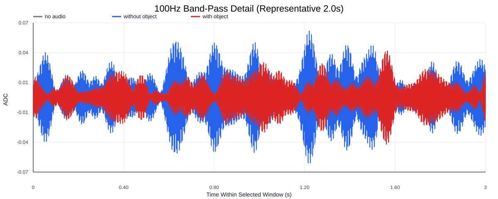
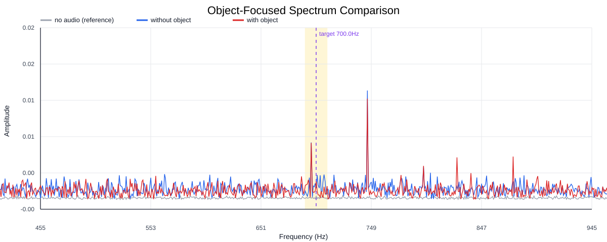
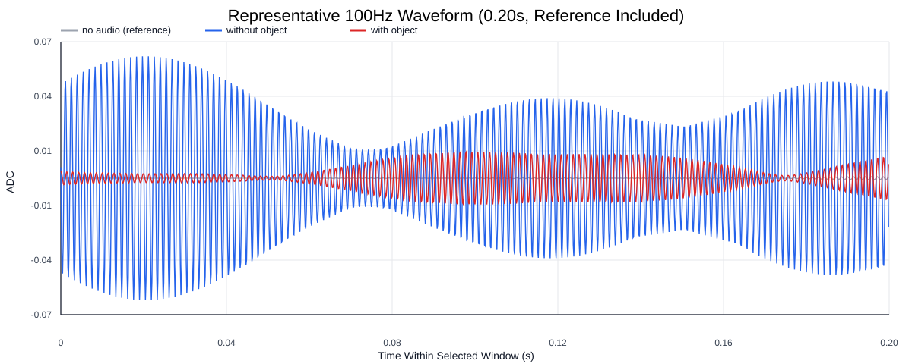
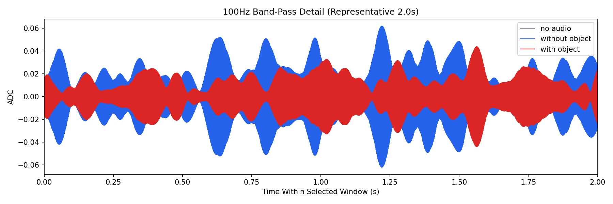
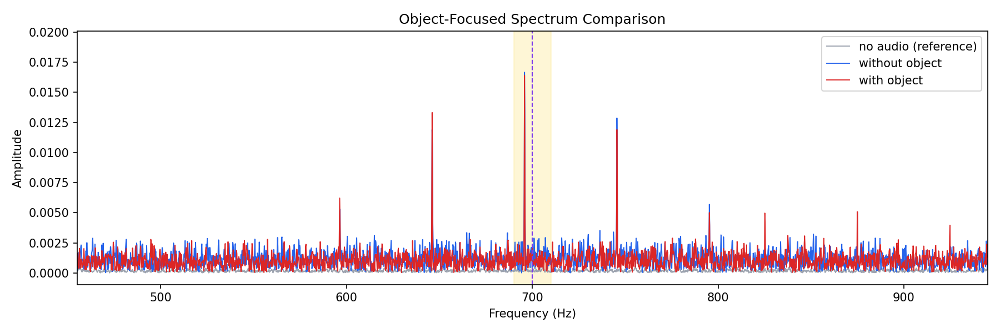
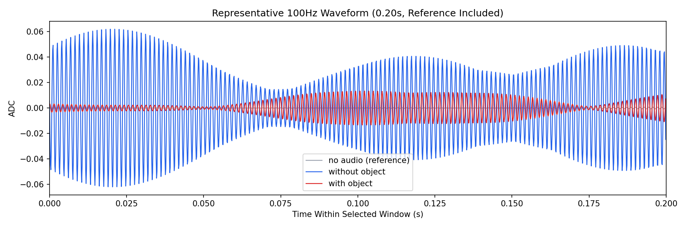

Background: F:\项目类文件夹\异物检测4.10\Data_Dual\frequency_sweep\0700Hz\repeat_02\raw\no_audio.csv
Without object: F:\项目类文件夹\异物检测4.10\Data_Dual\frequency_sweep\0700Hz\repeat_02\raw\without_object.csv
With object: F:\项目类文件夹\异物检测4.10\Data_Dual\frequency_sweep\0700Hz\repeat_02\raw\with_object.csv
| Metric | 无音频 | 100Hz无异物 | 100Hz有异物 | 无异物/无音频 | 有异物/无异物 | 有异物/无音频 |
|---|---|---|---|---|---|---|
| centered_rms | 0.019694 | 0.103319 | 0.100760 | 5.2462 | 0.9752 | 5.1163 |
| raw_target_amp | 0.000393 | 0.001335 | 0.002123 | 3.3976 | 1.5906 | 5.4041 |
| filtered_rms | 0.001657 | 0.015058 | 0.015101 | 9.0858 | 1.0029 | 9.1120 |
| filtered_target_amp | 0.000393 | 0.001335 | 0.002123 | 3.3976 | 1.5906 | 5.4041 |
| filtered_energy_ratio | 0.007082 | 0.021240 | 0.022462 | 2.9993 | 1.0575 | 3.1719 |
| window_filtered_target_amp_mean | 0.001015 | 0.016844 | 0.018043 | 16.5973 | 1.0712 | 17.7784 |
| window_filtered_target_amp_std | 0.001959 | 0.011893 | 0.009832 | 6.0697 | 0.8267 | 5.0177 |





